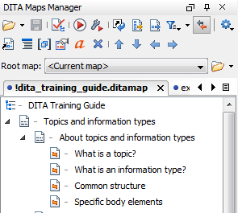
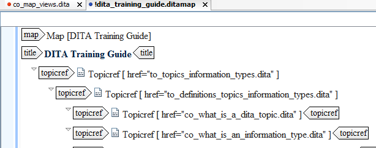

In Oxygen, maps can be viewed in a DITA Maps manager, providing you with a table-of-contents-like structure which is easy to navigate. In this view, you can add or remove topics or completely reorganize the structure. All files with the .ditamap or .bookmap extension are automatically opened in the DITA Maps Manager view.

Editor area
DITA maps can also be opened in the Editor area by double-clicking the map name in the DITA Maps Manager view. In the Editor area, the map opens up like a topic and displays all its topic references and components. In this view, you can add components like metadata elements and relationship tables.

Project view
Lastly, DITA maps can also be viewed in the Project View by right-clicking the map's tab in the DITA Maps Manager and selecting Add to project. From here, it can be opened with many other editors and viewers.